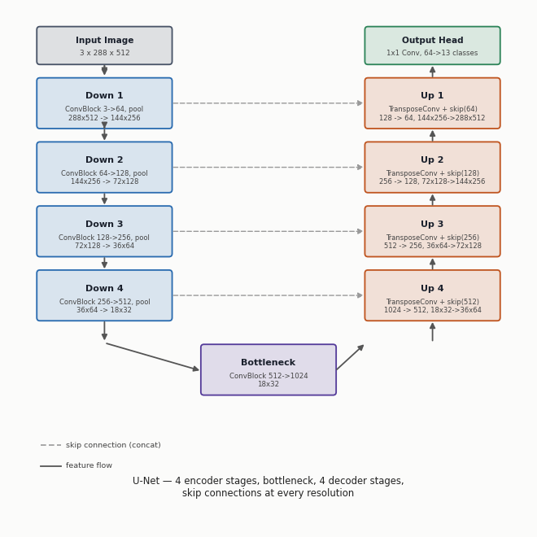
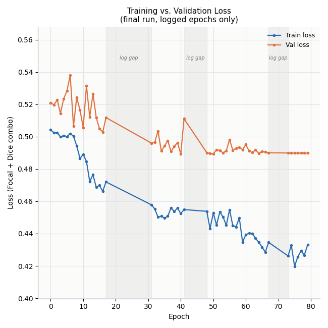
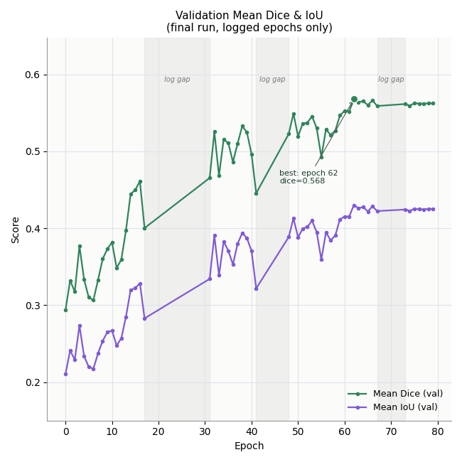
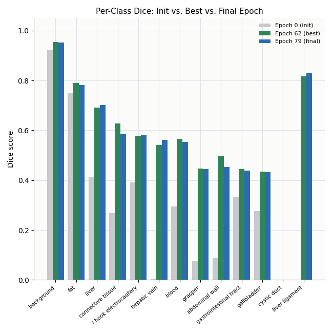

Surgical Image Segmentation: U-Net on CholecSeg8k
A U-Net built from scratch in PyTorch that labels every pixel of a laparoscopic gallbladder-surgery frame as one of 13 anatomy and instrument classes.
1. Overview
Task. 13-class semantic segmentation of laparoscopic cholecystectomy (gallbladder removal) frames. Each pixel is classified as background, an organ or tissue type, blood, or one of two surgical instruments.
Approach. A 4-level U-Net with no pretrained encoder, trained with a combined Focal and Dice loss to fight severe class imbalance, on a custom clip-level train, validation and test split.
Why I built it. I wanted to see for myself how a decoder rebuilds an image from a heavily compressed representation, so I built one instead of only reading about it. It is not a state-of-the-art result, and the limitations section says exactly why. The process is the point.
Stack. PyTorch, Albumentations and OpenCV, trained on a free-tier Google Colab GPU, with checkpoints saved to Google Drive so an 80-epoch run could be spread across several sessions.
Status. Trained for 80 scheduled epochs. Large, common structures (background, fat, liver) segment well. Several rare classes plateau at a mediocre score, and one, cystic_duct, never learned at all. I stopped there on purpose rather than keep tuning around a dataset limit I had already diagnosed.
2. Dataset
CholecSeg8k provides segmentation labels on top of Cholec80, a set of 80 laparoscopic cholecystectomy videos recorded at 25 fps and released by CAMMA (University of Strasbourg, IHU Strasbourg and IRCAD).
- 8,080 frames in 101 short clips of 80 consecutive frames each, taken from a subset of the Cholec80 videos, at 854 × 480 resolution.
- Each frame has three label images: a hand-annotated colour mask (for viewing only), a tool mask, and a watershed mask, which is the training target.
- 13 classes: background, abdominal wall, liver, gastrointestinal tract, fat, grasper, connective tissue, blood, cystic duct, L-hook electrocautery, gallbladder, hepatic vein and liver ligament. Several are rare and do not appear in every frame.
Why the watershed mask
The colour mask lets a person recognise the anatomy, but a loss function cannot use it directly. The watershed mask stores one integer class ID per pixel, so it is passed through a 256-entry lookup table into a clean (H, W) array of class indices 0 to 12. Cross-entropy-style losses need exactly this kind of per-pixel integer label.
Working out the class mapping
The raw integer values in the watershed masks are not clearly documented against the 13 class names. Matching them took real trial and error: cross-referencing the colour masks and, in a few cases, confirming a value by eye against the anatomy frame by frame. The final mapping is graded by how confident I am in it:
3. How the data was split
This was the hardest part of the project, harder than the architecture itself.
First attempt: split by whole video
Several classes appear in only one or two of the 17 source videos, so some vanished from a split by bad luck. The result was zero training frames for liver_ligament and zero validation frames for connective_tissue, blood and hepatic_vein. Those classes could not be learned or evaluated, whatever the model did.
The fix: split by clip, with class guarantees
Each video is made of several 80-frame clips, a finer unit that can be used to balance rare classes across splits. All frames of a clip always stay in the same split.
- Scan every frame of every clip and record which of the 13 classes appear in it. All frames are read, not a sample, because sampling could miss a rare class.
- Rank classes from rarest to most common. For each one, reserve at least one clip for train, and a second distinct clip for validation when one exists.
- Shuffle the remaining clips and distribute them to reach roughly a 70 / 15 / 15 frame split across train, validation and test.
- Keep each clip whole. Consecutive frames at 25 fps are near-duplicates, so splitting a clip would leak information and inflate validation scores.
This gives every class with real presence in the data some training coverage, and validation coverage wherever enough distinct clips exist. It cannot create frames that are not in the footage, but it stops the split from making the imbalance worse.
Handling imbalance in the loss and the pipeline
- Class weights. Per-class pixel-frequency weights, computed from the training split only, feed both the Dice and Focal terms. A rare class such as
hepatic_veinis weighted roughly 10×. - Temporal sub-sampling. Every 2nd frame for training and every 4th for validation and test, to cut near-duplicates.
- Preprocessing and augmentation. Frames are resized to 512 × 288. Training adds flips, affine shift, scale and rotation, and photometric jitter.
- Custom batch sampler. Each training batch draws from several different source videos, not a run of correlated consecutive frames.
4. Model architecture
A standard 4-level U-Net, written from scratch in PyTorch with no pretrained backbone. Input is an (N, 3, 288, 512) RGB image and output is (N, 13, 288, 512) raw per-pixel logits, with softmax applied afterwards.
Building block (ConvBlock). Two repetitions of 3×3 Conv (no bias), GroupNorm with 8 groups, then LeakyReLU(0.1). GroupNorm replaces BatchNorm because it stays stable at the small batch sizes a free Colab GPU allows. LeakyReLU avoids dead neurons that plain ReLU can cause with GroupNorm.
Bottleneck. One ConvBlock, 512 → 1024 channels at 18 × 32, the deepest and most compressed point.
Output head. A 1×1 convolution, 64 → 13 channels, producing class logits at full input resolution.
The encoder compresses 288 × 512 down to 18 × 32, a 16× spatial reduction, while growing to 1024 channels. The decoder mirrors it back up, and skip connections at every scale recover fine detail that pooling would otherwise lose. If a transposed-conv output does not match its skip connection in size, which can happen with odd inputs, it is bilinearly resized first instead of crashing or misaligning features.

Encoder
| Stage | Channels | Size after pooling |
|---|---|---|
| Down 1 | 3 → 64 | 144 × 256 |
| Down 2 | 64 → 128 | 72 × 128 |
| Down 3 | 128 → 256 | 36 × 64 |
| Down 4 | 256 → 512 | 18 × 32 |
Decoder
| Stage | Upsample in | + Skip | Out |
|---|---|---|---|
| Up 4 | 1024 | 512 | 512 |
| Up 3 | 512 | 256 | 256 |
| Up 2 | 256 | 128 | 128 |
| Up 1 | 128 | 64 | 64 |
Each decoder stage upsamples with a 2×2 transposed convolution (stride 2), concatenates the matching encoder skip, then fuses them with a ConvBlock.
5. Training setup
| Setting | Value |
|---|---|
| Learning rate | 1e-3, cosine annealed over the full run |
| Weight decay | 1e-4 |
| Batch size | 8 |
| Scheduled epochs | 80 |
| Loss | 0.5 × Focal (γ = 2.0) + 0.5 × Dice, both per-class weighted |
| Input size | 512 × 288 |
| Hardware | Google Colab, free-tier GPU |
6. Results and analysis
Validation metrics were logged for 56 of the 80 epochs. A few ranges are missing because a Colab session disconnected before that part of the log reached Drive. Training itself carried on through those gaps thanks to checkpoint and resume. Every number and chart here uses real logged values only, with nothing interpolated.
Mean IoU rose from 0.211 at initialisation to 0.430 at the best epoch.


Loss. Training loss fell steadily from about 0.50 to about 0.42–0.43. Validation loss dropped alongside it early on, then flattened around 0.489–0.490 for the last logged epochs. That plateau is real, not a logging artefact, and suggests the run had reached about what this architecture, dataset and loss could give.
Dice and IoU. Most of the improvement came in two visible jumps: one right after the first big gap, once the earlier split and loss-weighting fixes were fully in effect, and a gentler climb through the 50s and 60s before flattening.
Per-class Dice

The model does well on large, distinct, common structures: background, fat and liver. It also does surprisingly well on hepatic_vein and connective_tissue given how rare they are, which suggests the per-class loss weighting is doing real work. cystic_duct is the clear outlier, with a Dice of exactly 0.000 at every logged epoch.
7. Honest limitations
I included this section on purpose: an account of how the project actually went is more useful than one that pretends it went perfectly.
cystic_ductnever learned anything. Its Dice is exactly 0.0000 from initialisation to the final epoch. This is almost certainly a dataset problem: it is one of the rarest classes among the frames that contain it, and its raw-value mapping was only inferred, never visually confirmed, so some of its signal may also be mislabelled.- Several other rare or thin structures plateaued around 0.43–0.45 Dice: grasper, gallbladder, abdominal wall and GI tract. They are usable but not strong, and tend to be either small and thin (the instruments) or highly variable depending on what occludes them.
- I stopped deliberately. Once it was clear the ceiling came from class imbalance in the source data, not from more epochs or loss tuning, I stopped instead of iterating further on the same U-Net and dataset.
- Training was noisy and gappy, because it was spread over several Colab sessions. The 56 of 80 logged epochs are the real numbers, not filler.
8. Running inference
No GPU or training setup is needed, only Python 3.9 or newer and a terminal.
1. Clone and install
git clone https://github.com/Vihaan30g/surgical-image-segmentation.git cd surgical-image-segmentation pip install -r requirements.txt
2. Download the trained weights
Download the model weights and save the file as weights/best_model.pth at the root of the cloned repo. That is the filename the code looks for.
3. Add images
Put any .jpg, .jpeg or .png surgical frames you want segmented into the inference_input/ folder.
4. Run
cd src python inference.py
No arguments are needed. The script finds the weights, processes every image in inference_input/, and writes one file per image to inference_output/, named <original_filename>_prediction.png. Each output is one wide image with three panels side by side:
original frame | predicted segmentation mask | overlay on the original
9. Repository structure
surgical-image-segmentation/
weights/ put the downloaded best_model.pth here
inference_input/ your own images go here
inference_output/ results are written here automatically
assets/images/ diagrams and charts used in this project
src/
config.py paths, class mapping, hyperparameters
dataset.py dataset, mask remapping, augmentation, sampler
generate_clip_split.py builds the clip-level train/val/test split
compute_class_weights.py per-class loss weights
model.py U-Net architecture
losses.py Focal, Dice and combined loss
metrics.py Dice and IoU
train.py training loop, checkpointing, auto-resume
inference.py run the trained model on your images
diagnose.py debugging utilities used during development
requirements.txt
README.md
10. Next steps
- The dataset, not the architecture, is the real ceiling. Several classes appear in only a handful of source videos, and no loss re-weighting fully makes up for that.
- I plan a follow-up segmentation project using a transformer-based architecture (the SegFormer or Mask2Former family) on a better-balanced dataset.